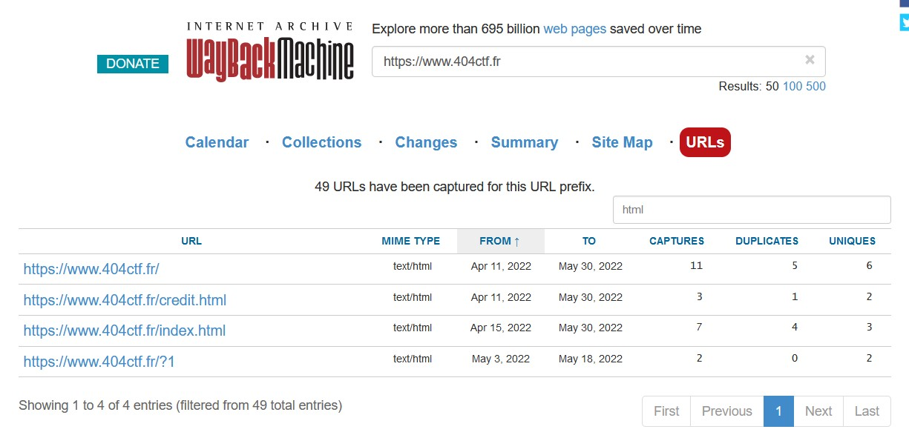
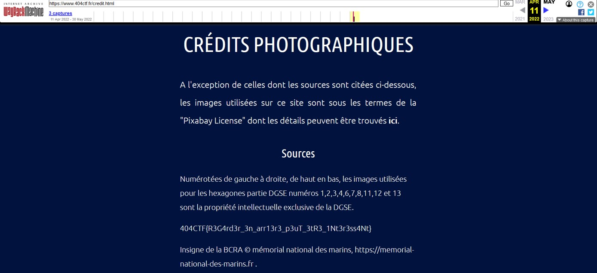

Some confidential information were found and has been removed. We want to know which information has been found previously.
The website “WayBackMachine” take screenshots of different websites and store it on his database. Therefore, it is possible for any person, going in “https://archive.org/web/” to have access to previous version of the website.
By looking at the domain 404ctf.fr and filtering on "html", we can see which subpage has changed.

2 webpages have changed on the 11th April 2022.
Taking a look at https://www.404ctf.fr/credit.html at the date 11 April 2022, the flag is present.
